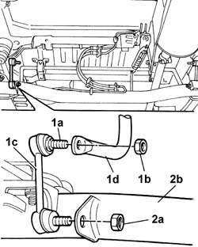
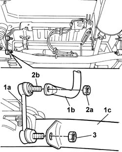

4420C12 rear suspension stabiliser bar joint - r+r on vehicle
- Path
- Procedures > 44 SUSPENSION AND WHEELS > 4420 REAR SUSPENSION > 4420C rear suspension stabilizer bar/links > 4420C12 rear suspension stabiliser bar joint - r+r on vehicle
- Kind
- repair procedure (removal / refitting; the operation number is the code)
- Applies to
- all engines; all production periods
- Interactive page
- https://sloeber94.github.io/elrnDB-fDbl/en/#/2584757
Applies to: all engines; all production periods; only with equipment: Doblò trim level
 Removing
Removing
 Refitting
RefittingPlace the car on a ramp.
1. Holding stud (1a) secure, unscrew nut (1b) and separate joints (1c) from the antiroll bar (1d).
2. Use the same method to unscrew nut (2a) and separate the joint from the rear axle (2b).

Applies to: all engines; all production periods; only with equipment: Doblò trim level
Refitting
Removing1. Fit joint (1a) and connect to antiroll bar (1b) and rear axle (1c).
2. Tighten nut (2a) to torque while holding stud (2b) secure.
 | Fastening | Component | Ø | Value (daNm) |
|---|---|---|---|---|
2a | Nut | REAR ANTI-ROLL BAR PIVOTS | M10 x 1.25 | (Anti-roll bar) 5.2 |
3. Use the same method to tighten the remaining nut to torque.
| Fastening | Component | Ø | Value (daNm) |
|---|---|---|---|---|
3 | Nut | REAR ANTI-ROLL BAR PIVOTS | M10 x 1.25 | (Rear axle) 5.2 |

Applies to: all engines; all production periods; only with equipment: Doblò trim level
Remove the vehicle from the ramp.